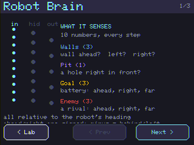
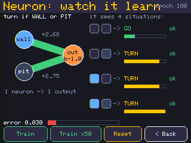
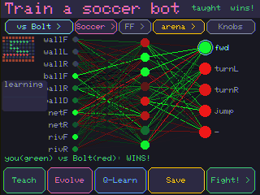

Stop writing the rules. Start training them — and beat your hand-coded bot.
Meet the brain
One tiny brain, many jobs
10 → 8 → 5
10 senses in → 8 hidden thinkers → 5 actions out. The same brain solves mazes, fights, and plays soccer.

10 → 8 → 5
Watch it learn
Nobody told it the rule
In NeuroLab → One neuron: it guesses, sees how wrong it is (the loss), and nudges its weights — over and over — until it says “learned!”
It learned from examples, not from a rule someone wrote.

NeuroLab · One neuron
Where senses come from
Perception 👀
The tiles right next to the robot become the 10 numbers the brain reads — “wall ahead = 1,” “ball to my right,” and so on.
In real life, who tells the robot “wall ahead”? A camera does — and turning pixels into “wall ahead = 1” is the hardest part of a real robot (the hard 90% of a self-driving car).
Three ways to train one brain
Know your trainers
Trainer
What it is
Watch out
Teach
copy an expert (imitation)
sharp in seconds; can't out-think a foe
Q-Learn
reward what works (“did it score?”)
no teacher; but a bad reward misleads it
Evolve
best brains breed + mutate
adapts to a foe; slow + overfits from scratch
All three build on the brain you already have — Teach first, then sharpen. Only “Fresh” wipes it.
Lab · train your first player
Teach a soccer player ⚽
Arena → Train a fighter → Soccer.
Tap Teach — in seconds the brain is dribbling (it says “taught wins!”).
Spar up the ladder, then Save your player.

Train a soccer bot · Teach
We measured it over many seeds
A head start beats a blank page
Teach (copy the expert) → won ~83% 👍
Evolve from noise → won only ~33% 👎
If a good expert exists, copy it first — then sharpen. Don't evolve from nothing.
Code vs brain
Rematch your hand-coded bot
Field your trained striker against yesterday's hand-coded one. The brain aims at the open corner and finds the exact spot to stand — finesse you couldn't write as blocks.
That gap is the whole reason machine learning exists.
trained vs hand-coded
Same brain, re-sensed
Maze → fight → soccer
It's the identical network shape. Only what it senses as the goal and how it's rewarded changes.
watch a live brain think
You did it 🎉
Day 4 checkpoint
I watched a neuron learn from examples.
I trained and saved a soccer brain.
I can name Teach, Q-Learn, Evolve and what each is for.
Next time → 🏆 Day 5: Champion. Sharpen a real striker and run a tournament.